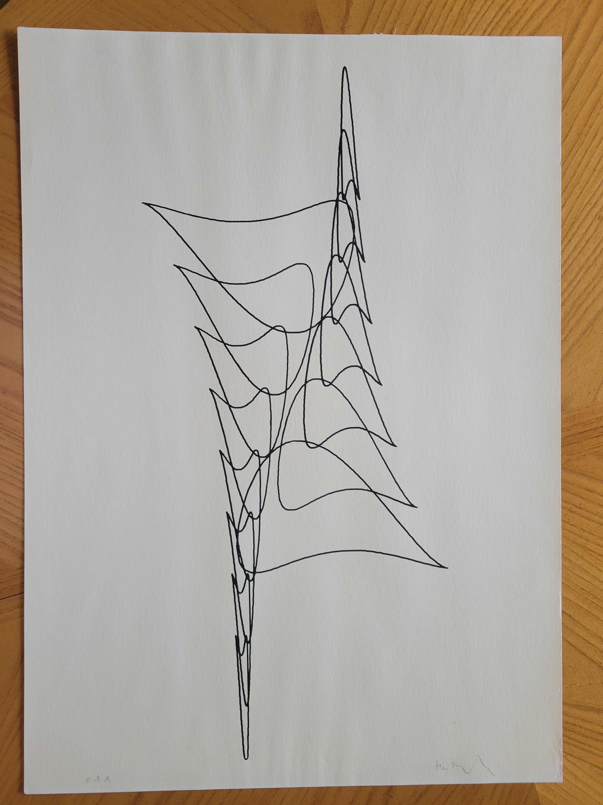
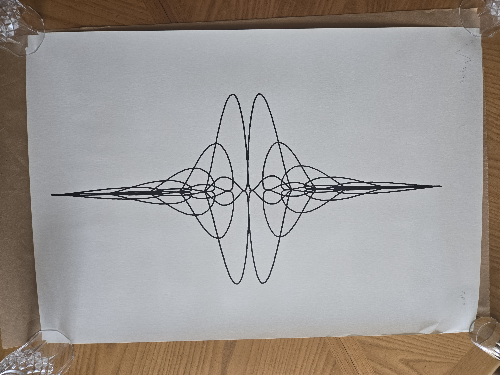
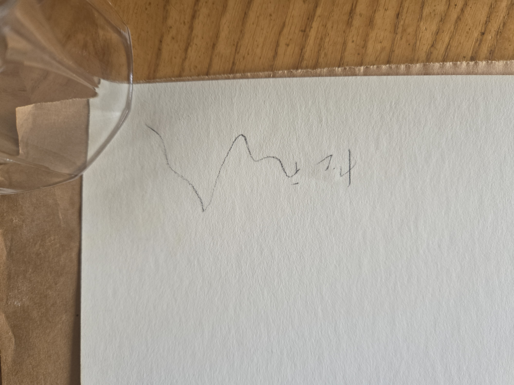
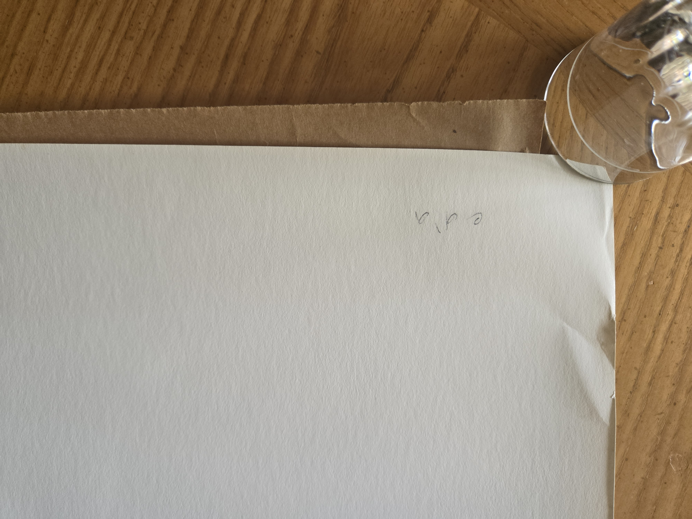
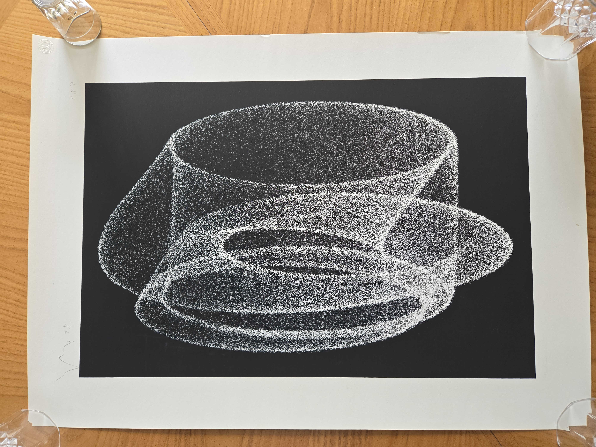
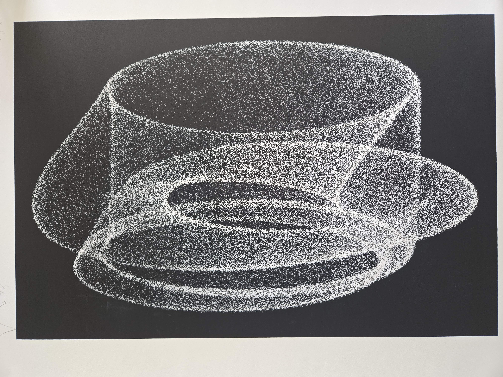
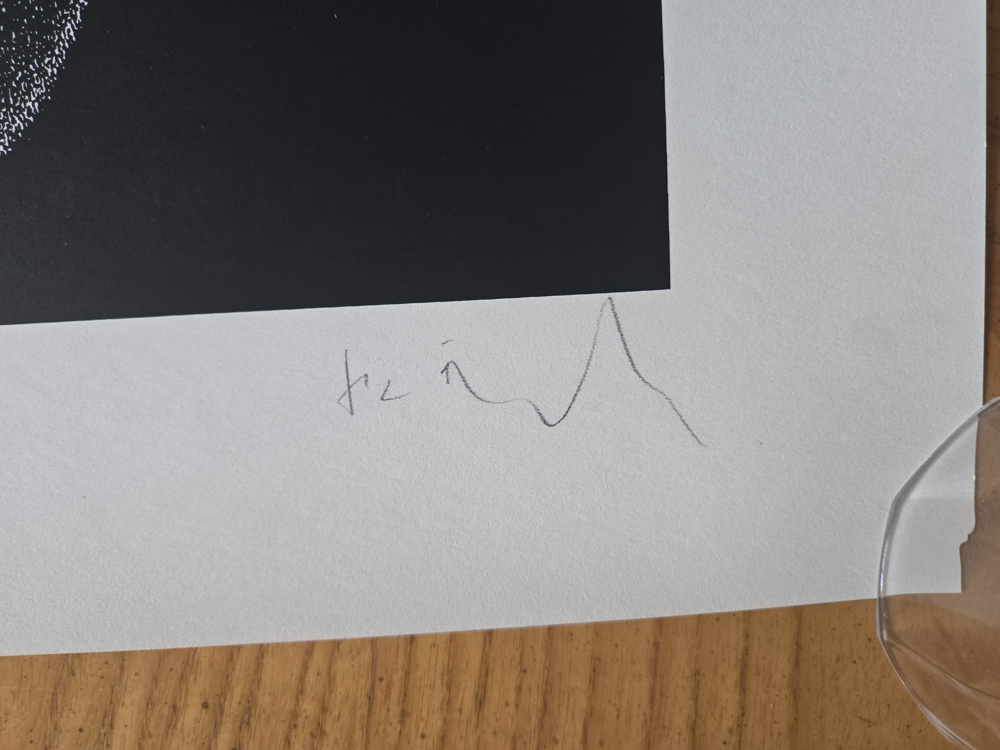
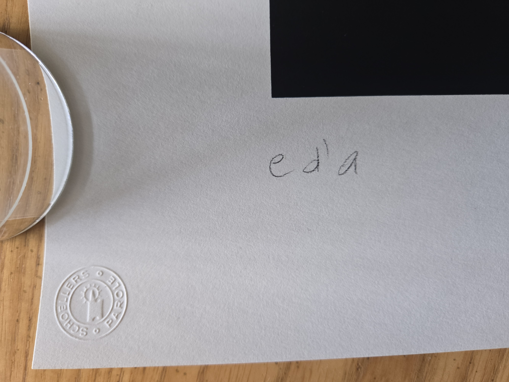

Artist Proofs — Computer-Generated Serigraphs, c. 1970
Herbert W. Franke (1927–2022) was a pioneering figure in computer art, moving from early analogue oscilloscope experiments in the 1950s to digital plotter graphics in the late 1960s. The works presented here are artist’s proofs of serigraphs produced around 1970 from his foundational series. These proofs stand outside the numbered editions of 100 and represent rare, primary material from the earliest period of computer-generated graphic art. Catalogued examples reside in major collections including the ZKM | Center for Art and Media Karlsruhe and the Anne + Michael Spalter Digital Art Collection.
KAES Series — Kurven, AESthetische (Aesthetic Curves)

KAES Series — Kurven, AESthetische (Aesthetic Curves)



Dance of the Electrons Series (from earlier analogue oscillograms)



